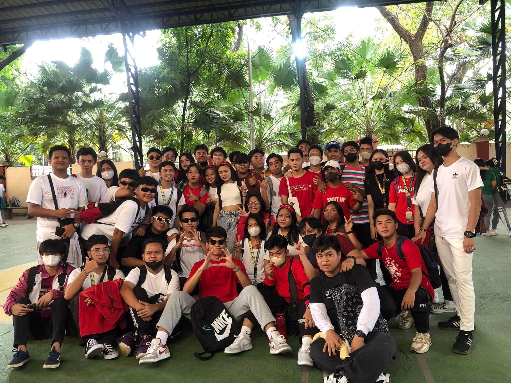
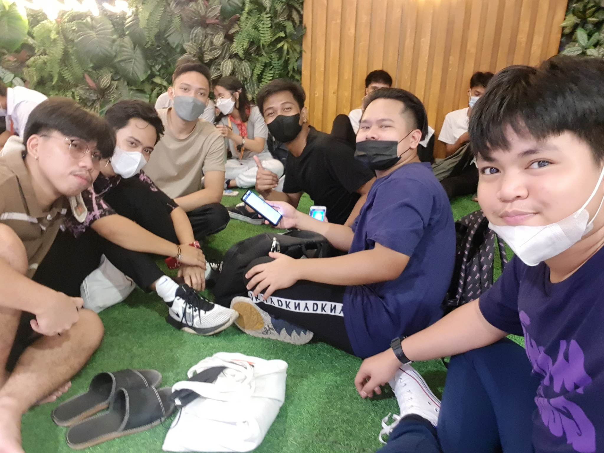
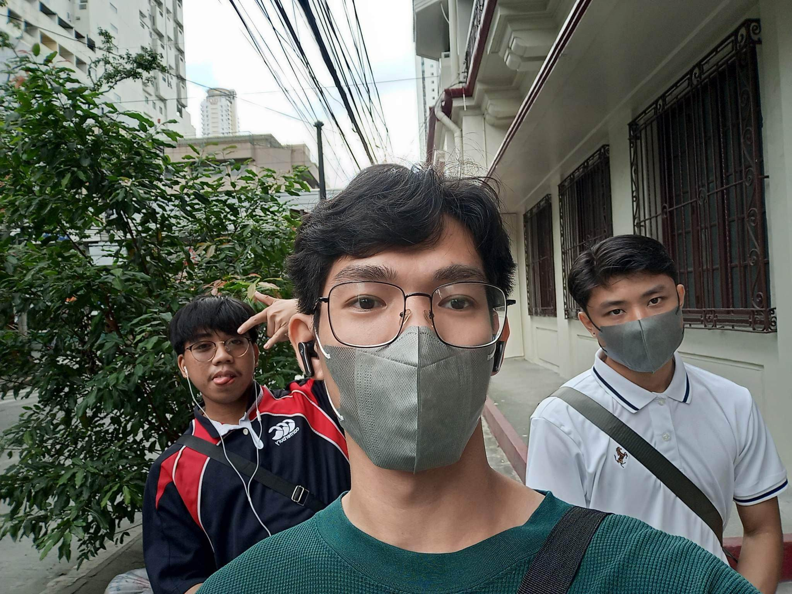
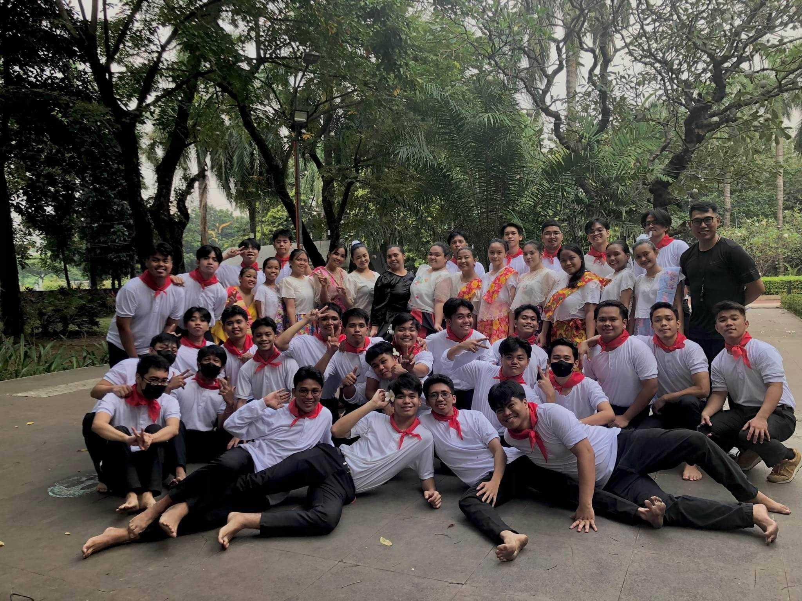

 
I’m Ervin John S. Morante and I’m 20 years old. I’m currently a second year student, studying at Universidad De Manila. My college days started a year and a half ago. I expect much on my college days. From the movies I watched, and books I read, college days seems so enjoyable, relaxing, and another unforgettable experience. Sadly and unfortunately, the pandemic hits on my college days. Everyone forced to study in their houses with the help of online classes. This type of education stresses me out. It is so hard to study in this kind of environment. I know everyone are also adjusting but for me, this kind of education stresses me out. It only provoked the laziness inside me. I lost the will to study unlike before that I enjoy studying because I enjoy learning new things. It is also so hard to make new friends and meet new people in this kind of environment. So far, I’m studying and doing all of my works having just a little motivation. This kind of education is not for me. I know I’m still a freshman so, I still have a long way to go in my college days. I’m looking forward to have some thrill, to have some surprises in my college days. I’m looking forward for my expectations in college days to happen. For now, I will do my best to enjoy and make full use of my college days.